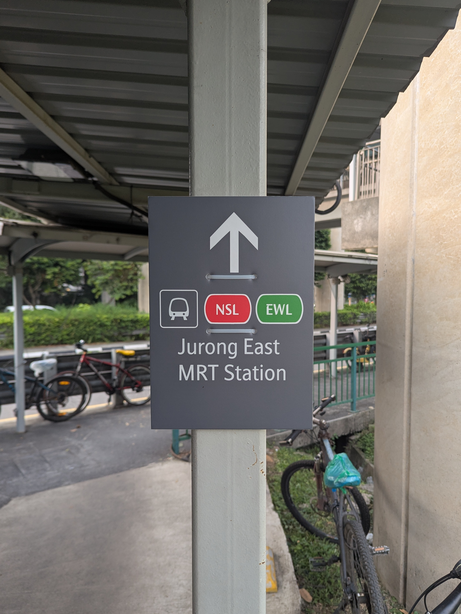
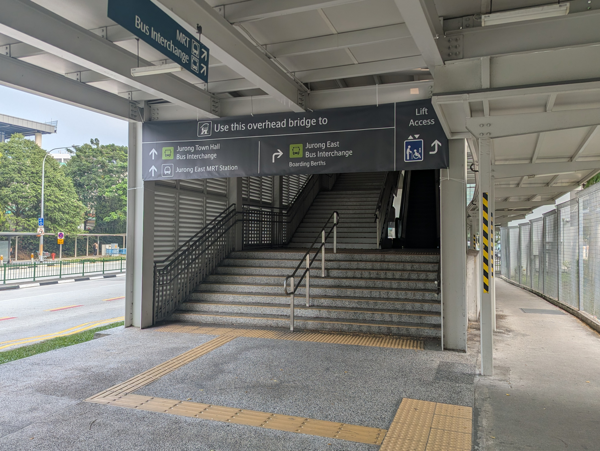
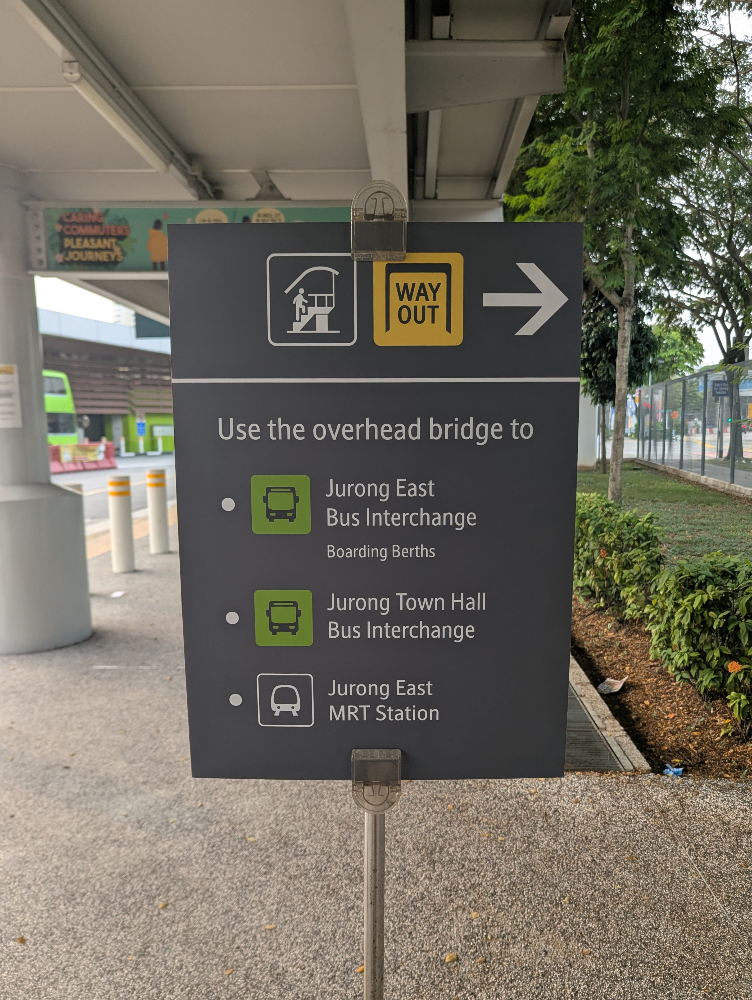

06 — Implementation
From mockups to installation
Working with LTA, the designs moved from mockups to actual installations. LTA provided guidance, approval and overall fabrication of these signs, and ensured compliance with their standards and specifications.
Image courtesy of Vareck Ng and Adiel Rusyaidi.




